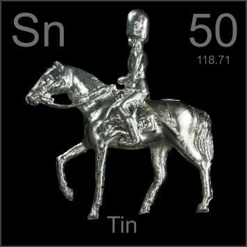

HOME
PREVIOUS
NEXT

Tin
Atomic Weight: 118.71
Density: 7.31 g/cm3
Melting Point: 231.93 °C
Boiling Point: 2602 °C
The classic tin soldier was sometimes made of pure tin, but more often tin-lead or lead-antimony alloys, or, shudder, just plastic. I cast this one out of 99.99% pure tin in an antique mold meant for kids to use.